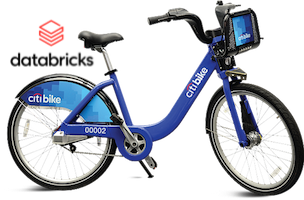
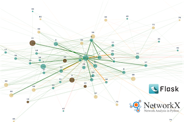
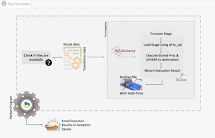
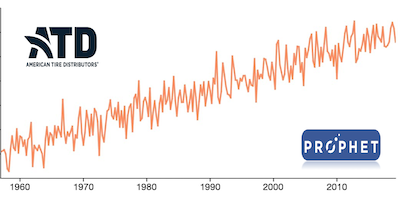

About
In my academic and professional experience till date, I have been involved working with huge amount of data, creating reports and visualizations for stakeholders. Fascinated by the potential to unearth insights from the vast amounts of data generated every day, I started pursuing masters in Data Science. In the next 5 years, I see myself as an expert data science consultant with understanding of how information can be mined, convert ordinary data to extraordinary insights to help business and individuals with data driven decision making.
Data Scientist/Engineer & Data Analyst.
My Motto: Transforming ordinary data to extraordinary insights and converting uncertainties into opportunities.
- Birthday: 9 Aug 1993
- Phone: +1 (585) 410 8771
- City: Rochester, New York, USA
- Age: 30
- Degree: Master's in Data Science
- Email: sayankrswar@hotmail.com
With experience in health insurance, manufacturing and singal-processing industries, I am proficient in programming languages such as Python and R, and skilled in using data visualization tools such as SQL, Tableau, Power BI and Excel to uncover insights and drive business growth. With a strong foundation in statistics and machine learning, I am well-equipped to identify trends, patterns, and opportunities within data, and to develop predictive models to optimize outcomes and drive efficiency. I would be more than happy to connect and learn more about how I can use your data and make the most sense of it.
Skills
Skills I have gained through professional expereice and academic research/projects
Techstack/Languages
- AGILE Development
- Python
- R
- SQL
- DAX
- C/C#
Machine Learning
- Regressions & Classification Models
- Support Vector Machines
- Bagging/Boosting Models
- Tree Based Models
- Clustering Models
- Time Series Models (ARIMA/Prophet)
Data Management/ETL
- MS SQL Server
- SQL Alchemy/Duck-Db
- PostgreSql
- Sql Server Integration Services (SSIS)
- ETL Pipeline Development
- ETL Automation (Task Scheduler/$Universe)
Statistical analysis
- Statisticals Distributions
- Hypothesis Tests
- Parametric/Non-Parametric Models
- Generalized Linear Models
- Bayesian Statistics
- Network Statistics
- Network Community Detections
Cloud Services
- AWS Solutions Architect
- Databricks
- Spark, DeltaLake
- MlLib, MLFlow/ML Registry
- Snaplogic Cloud Services
Data Visualization
- Power-Bi
- Qlikview
- Tableau
- Plotly
- Microsoft Excel
- Seaborn
- Matplotlib
I also have brief work experience in web development methodologies with ASP.Net, ADO.Net, ASP.MVC, Javascripts.
Professional Work Experience
Data Science Engineering Intern
Jun 2023 - Jul 2023
Tapecon, Buffalo, NY
- Leveraged data analytics to drive decision-making by identifying relevant data sources, integrating machine and enterprise resource system data, and constructing a centralized data mart in SQL Server Management Studio.
- Conducted in-depth analysis of manufacturing data using Python, providing insights into production trends, defects, and downtime patterns. Developed visual representations of data findings via Power BI reports, enabling efficient tracking of production performance and identification of operational gaps.
- Predicted downtime through Cat-Boost algorithm application to modelled data, employing SHAP analysis to identify influential features.
- Estimated material waste via Poisson Generalized Linear model, comparing actual and ideal production figures.
- Implemented Markov chain modeling techniques on production data, creating transition matrices that shed light on machine runtime and downtime patterns.
BI Application Developer
Aug 2019 - Jul 2022
Tata Consultancy Services, Montevideo, Uruguay
- Analyzed large clinical datasets with 250 million+ records, understood business requirements for a healthcare payor, identified key information and designed reporting solutions with PowerBI, QlikView & SSIS.
- Developed Power BI Dashboards for visualization & tracking of COVID-19 cases, determined infection types as per ICD Codes and analyzed by demographics and clinical summaries.
- Designed underlying data model, built reports in Power BI & QlikView to monitor status of critical ETL jobs, SLA expectations & performance deviations to take corrective measures.
- Generated CMS Compliance clinical audit reports & visualizations; performed root-cause analysis of data issues, bugs in reports/SQL queries & SSIS packages, deployed fixes.
- Developed SnapLogic ETL pipelines for data migration from on-premises infrastructure to Cloud.
- Developed solutions/visualizations as Process Improvements that saved client 50K USD annually.
ETL/SQL Application Developer
Jan 2017 - Jul 2019
Tata Consultancy Services, Chennai, India
- Created ETL & reporting applications using Microsoft SSIS; Automated jobs with help of Dollar-Universe tool as SQL database & ETL developer for a healthcare account.
- Designed ETL solutions to integrate data from heterogeneous OLTP sources and files to OLAP database while facilitating efficient data storage & complex reporting.
- Developed a .NET MVC web application to search database components within ETL packages by extracting required XML tags (PI that saved 40K USD annually).
- Maintained project status and defect related documents for auditing and managing internal team release.
- Organized multiple events within account (50+ employees) on a weekly basis for employee engagement and greater team collaborations.
- During training, led a team of 6 members, coded modules such as Login, Customer Account Management Transaction-Handling using C #, MVC architecture and ADO .NET Model, HTML and CSS.
Academic Work Experience
Research Assistant
Aug 2023 - Present
URSeismo, University of Rochester
- Analyzed body waves and implemented Sequencing Technique leveraging Minimum Spanning Trees to identify trends in signals across stations.
- Defined SNR functions to analyze and filter millions of seismic waves.
Data Analyst & Graduate Assistant
Aug 2022 - May 2022
Graduate Education & Post Doctoral Affairs Office, University of Rochester, NY
- Managed and analyzed the applicant database (Slate) for insights into enrollment/admissions.
- Generated comprehensive analytical reports using Tableau for the Graduate Admissions office.
- Engaged in student outreach and responded to queries from prospective students.
- Coordinated and oversaw graduate student activities and events.
Teaching Assistant
Aug 2022 - May 2022
Data Science Department, University of Rochester, NY
- Lead Teaching Assistant for the CSC 261/461 Database Systems Course.
- Managed and coordinated a team of 6 TAs.
- Oversaw the grading of projects and midterms.
- Took Classes, Conducted help sessions and addressed students' conceptual doubts.
- Liaised with the Professor to ensure streamlined execution of tasks and responsibilities.
Projects
Following are the details of few projects I have worked on till date. Hover over for a summary and click if you are interested to know more 🤓
NYC Citibike Demand Forecasting
Report/Code

A scalable end-to-end Machine Learning pipeline implemented on the Databricks platform leveraging MlLib/MLFlow/MLRegistry concepts to enable Citibikes better understand demand patterns, timely replenish bikes at the docks, and manage the distribution of bikes across different stations.
Building an end to end machine learning pipeline that can predict the hourly demand of NY Citi-Bikes at a particular station.
URMC Speciality Referral Network Analysis
Report/Code

At the University of Rochester Medical Center (URMC), referrals from primary care to specialty practices often get delayed causing inconvenience for both medical staff and patients. In this project we aim to pinpoint inefficiencies, identifying specific departments or pathways that lag by employing a network analysis tool using Flask.
Can we visualize the bottlenecks that occur in the specialty referral network so that opportunities for improvement can be further explored?
Economical Data Engineering
Report/Code

In this project I illustrate the process of implementing automated data pipleines with open source tools. I aim to demonstrate how simple solutions and proactive initiatives can empower us to commence data gathering from day one and offer valuable insights for strategic decision-making.
Can we build Efficient Data Enginnering Pipelines with in house technology and No Additional Software Overhead Cost?
Unsupervised Learning with Seismic Signals
Report/Code
The aim in this project is to analyze earthquake signals, extract their properties, and cluster them based on these properties. This approach aimed to present a more refined and well-informed dataset, contributing to further research in the Earth Science community.
How can we use Unsupervised Learning & Deep Learning such as Kmeans and Deep Embedded Clustering methods to find meaning in Seismic Signals?
Forecasting Scrap Tier Receipt for ATD
Report/Code

American Tire Distributors (ATD) is one of the largest independent suppliers of tires to the replacement tire market. In this project a forecasting model was developed to refine ATD downstream logsitics of scrap tire recycling and reduce cost.
Can we inform American Tire Distributors (ATD) about how many scrap tires will be collected by a given Distribution Center every day?
Developing Machine Learning Models From Scracth
Report/Code
This project was created with the objective of delving into key machine learning algorithms, exploring their fundamental concepts and true algorithms, and conducting comparative analyses with existing packages to ensure a better understanding of their functionality and correctness.
Is it alright to use Regression, Gradient Boosting, PCA etc. Machine Learning concepts and models without understanding the fundamentals?
Education
University of Rochester
Master in Data Science, Aug 2022 - Dec 2023
Grade: 3.7
During my masters, besides coursework, I was involved in multiple roles such as Graduate, Teaching and Research Assistant. I participated in number of events/ hackathons and represented our Data Science department on number of occassions.
Relevant Coursework:
- Computational Statistics
- Time Series Analytics
- Statistical Machine Learing
- Network Science Analytics
- Spark & Databricks
- Data Mining
Extracurricular:
- Our team of three was awarded First Prize in Global Health Create-A-Thon for proposing a novel approch to develop a multilingual electronic health information resource for Village Health workers/Community Health Workers leveraging LLMs and existing Deep_learning models such as Whisper, Laser3.
- Our team, "SKS_Cube" Received Special recognition in Driven Data Hacakthon for achievning the Best MAE in Flight Pushback Time Prediction at US Airports challenge sponsored by NASA.
Testimonials
Few recommendations received during former professional and academic tenure:
Fun Facts
Love Watching Movies
Sings and Plays Guitar
Volunteers and Supports
Loves Hiking/Travelling
Contact
Feel free to contact me using the information below.
Location:
Rochester, New York
Email:
sayankrswar@hotmail.com
Call:
+1 (585) 410 8771